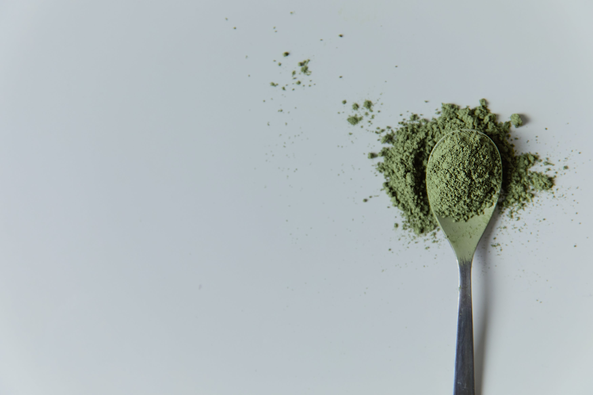
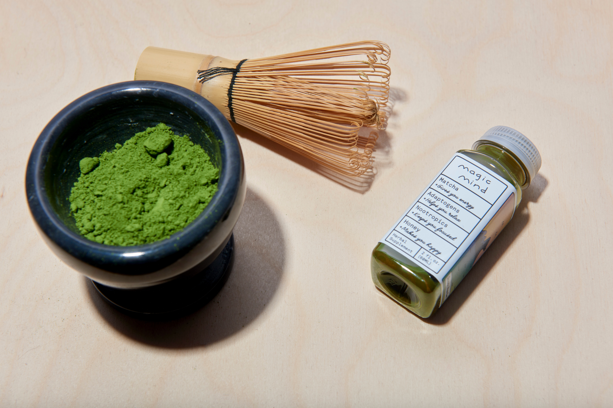
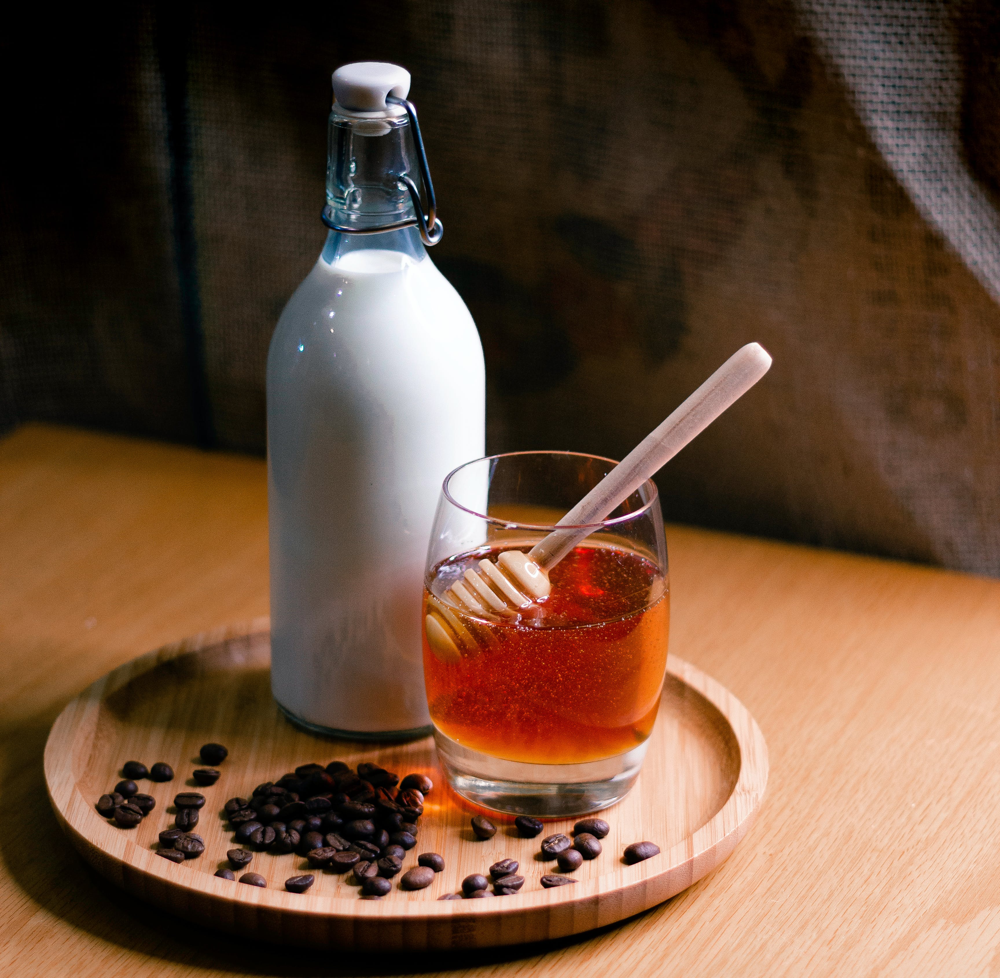
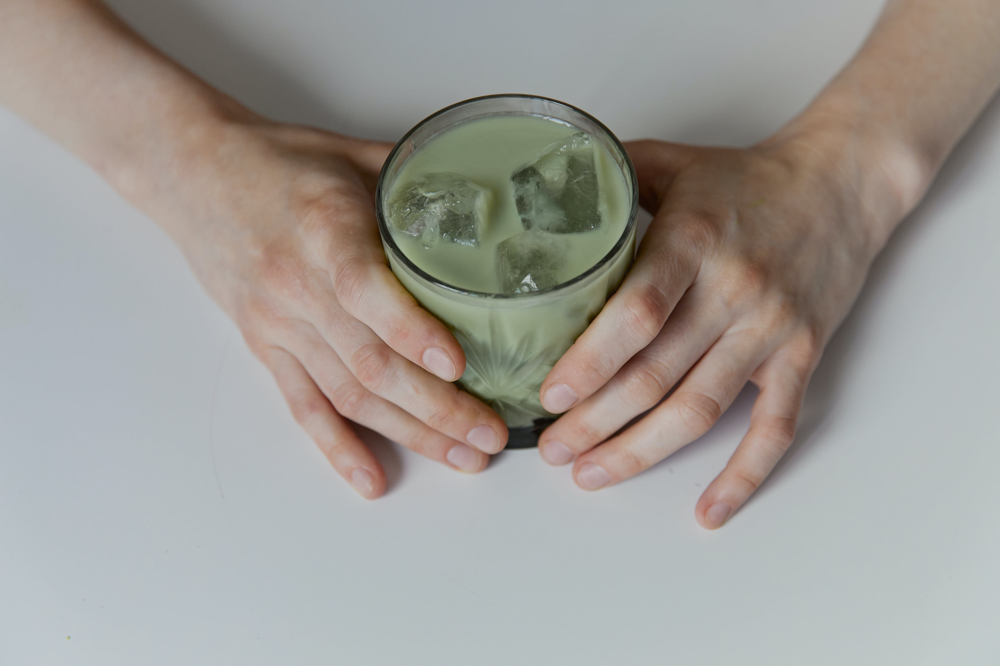

📖 My Favorite Recipe
Matcha dishes come in many shapes and forms, but nothing beats an old fashioned 🧋 ice matcha latte to power me throughout my day with sustained caffeine release and a dash of wonderful flavor to brighten up my darkest days ⚡️ Here is my favorite recipe:
👆 Step 1: Prepare 2 teaspoons of ceremonial grade matcha and, using a strainer, sift them through into a matcha bowl.
✌️ Step 2: Boil 1/4 cup of water, then pour into matcha bowl and whisk aggressively, making sure to dissolve all the matcha chunks.
👌 Step 3: Prepare 4 cubes of ice 🧊 and place them in a transparent and beautiful glass. Concurrently, add 2 teaspoons of natural honey 🍯 into the matcha bowl.

🖖 Step 4: Pour 3/4 cups of oat milk 🥛 into the glass, my favorite oat milk being Planet Oat.
🖐️ Step 5: Pour the matcha-honey mixture into the glass, and enjoy!
Voila! In less than 10 minutes you have a surefire recipe that will impress anybody, and more importantly, fuel your body with healthy nutrients and power your day 🏎️ Hope you enjoyed it as much as I do!